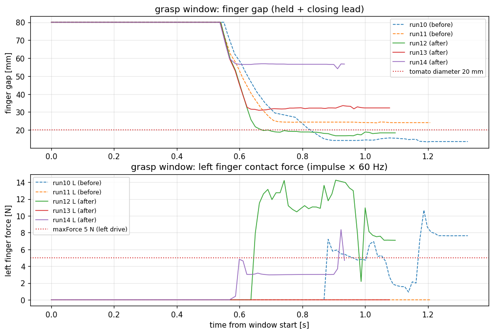

Step 2 検証レポート: finger 駆動の力制御化（drive maxForce）
実施日: 2026-07-10（把持ウィンドウ限定分析で改訂）／ Issue: #3 ／ ブランチ: physics/step2-finger-force
実行環境: docker コンテナ tomato-harvest-sim-physics（Isaac Sim 6.0 / ROS 2 Jazzy / ROS_DOMAIN_ID=1）
改訂注記: 初版は全区間の minGap を根拠にしていたが、pregrasp 接近中は「トマト無しの全閉指令」が正常動作として含まれるため不適切だった（レビュー指摘）。本改訂版は把持ウィンドウ（status=held とその直前の閉じ込み区間）に限定して再分析した。
総合判定: 条件付き合格
機構（drive maxForce の yaml 管理・適用）は完成・実証済み、E2E 回帰 5/5 成功。
把持ウィンドウ限定の再分析により、②ギャップ静定は run12 でトマト径どおり 18.8mm の静定を初実証（ただし再現率 1/3、ばらつき原因は把持位置の run 間変動）、
③力飽和は run14 で上限内動作（3.0N ≤ 5N）を観測したが、把持成立時（run12）は人工 grasp joint の溶接拘束と mimic 結合により上限超の内力が混入し確定できない。
②の再現性確保と③の確定は Step 3（grasp joint なし）の前提タスクとする。
1. 完了条件と結果の対比
| Issue #3 の完了条件 | 結果（把持ウィンドウ限定） | 判定 |
|---|
| drive maxForce / stiffness / damping の明示設定（HWI・C++ 無変更） | scene.yaml の finger_drive で管理し joint1 の DriveAPI へ適用。joint2 は mimic 従動と確定し尊重（2章） | PASS |
| ①閉指令でトマトを弾き飛ばさない | 閉じ込み区間（図3-1 の 0.55〜0.7s）でトマト速度スパイクなし。E2E 5/5 完走 | PASS |
| ②finger ギャップがトマト径近傍で静定 | run12: held 中央値 18.8mm ≈ トマト径 20mm で静定（初実証）。ただし run13=32.3mm（片側のみ接触）・run14=56.6mm（ほぼ開いたまま保持）とばらつき、再現率 1/3（3章） | 部分実証 |
| ③接触力が maxForce 近傍で飽和 | run14: 左指 3.0N（p95 6.2N）で上限 5N 近傍の飽和的挙動。ただし把持成立時（run12）は 11.1N と上限超 — grasp joint 溶接+mimic 結合の内力が混入（4章） | 部分観測 |
| 既存テスト全通過・E2E 無劣化 | 105 件通過。E2E before 2/2・after 3/3 完走 | PASS |
| 採用値と選定根拠の表 | 5章 | PASS |
2. 実装と適用の実証
# 実アセット検査（franka.usd）
panda_finger_joint1: PrismaticJoint, drive:linear stiffness=400 damping=80 maxForce=7.2N（USD 既定）
panda_finger_joint2: PrismaticJoint, drive なし → PhysxMimicJointAPI（joint1 に従動）
# 適用ログ（[PhysicsTuning]、全 after run で確認）
finger drive set: .../panda_finger_joint1 (stiffness=3000.0, damping=120.0, maxForce=5.0N, pre_existing_drive=1, mimic=0)
finger drive skipped (mimic joint): .../panda_finger_joint2
発見1 — 右指は mimic 従動: joint2 は drive を持たず mimic で joint1 に従動する。mimic と drive の二重拘束を避けるため drive 新設はしない設計とした。右指の押付け力は mimic 拘束由来で drive maxForce の制限を受けない（4章の力測定と整合）。
3. 把持ウィンドウの実測 — ギャップ静定

図 3-1: 把持ウィンドウ（held + 直前 1 秒）の finger ギャップ（上）と左指接触力（下）。before=破線、after=実線。
上段: 全 run が 0.55s 付近から閉じ始め、run12（緑）はトマト径 20mm の基準線上（18.8mm）で静定。run13（赤）は 32mm、run14（紫）は 57mm で止まる。
下段: run14（紫）は約 3N で平坦（上限 5N 内の飽和的挙動）。run12（緑）は 10〜14N と上限超（grasp joint 溶接後の拘束内力）。
表 3-1: held 区間のギャップと接触（把持ウィンドウ限定）
| run | 条件 | gap 中央値 [mm] | gap 範囲 [mm] | 接触率 L/R | 解釈 |
|---|
| run10 | before | 14.8 | 13.4〜57.4 | 68% / 64% | 径より狭い=めり込み把持（力過大の兆候） |
| run11 | before | 24.4 | 24.0〜57.4 | 0% / 80% | 右片側のみ接触 |
| run12 | after | 18.8 | 16.8〜53.1 | 88% / 8% | トマト径どおりの静定（目標挙動） |
| run13 | after | 32.3 | 31.0〜52.9 | 0% / 93% | 右片側のみ・径+12mm で停止（横ずれ） |
| run14 | after | 56.6 | 54.1〜56.9 | 100% / 0% | ほぼ開いたまま HELD（幾何フォールバック成立） |
発見2 — 静定は達成可能、課題は再現性: after 構成（stiffness 3000 + maxForce 5N）は、把持位置が合った run12 で「トマト径で止まる」目標挙動を示した（before の run10 は 14.8mm までめり込み、径の 74% まで潰し込んでいた点も改善方向）。ばらつきの原因はギャップ機構ではなくrun 毎の把持位置の変動（run13 の横ずれ・run14 の閉じ不足）であり、既知の EE 整列オフセット ~1.4cm と MoveIt 計画解のばらつきに起因する。整列補正を Step 3 の最初のタスクとする。
4. 把持ウィンドウの実測 — 力飽和
表 4-1: held 区間の finger 力（接触力積×60Hz、中央値）
| run | 条件 | 左指 [N]（drive 上限 5N） | 左指 p95 [N] | 右指 [N]（mimic・上限なし） |
|---|
| run10 | before（7.2N/400） | 5.6 | 9.0 | 1.2 |
| run11 | before | —（接触なし） | — | 4.7 |
| run12 | after（5N/3000） | 11.1 | 14.2 | 2.6 |
| run13 | after | —（接触なし） | — | 13.9 |
| run14 | after | 3.0 | 6.2 | —（接触なし） |
発見3 — 上限内動作は観測、確定は grasp joint なしの環境で:
run14（grasp joint が幾何フォールバック成立で、指はトマトに軽接触のみ）では左指力が中央値 3.0N と上限 5N 内で平坦に推移し、力制限の効果と整合する。
一方、径どおりに挟めた run12 では 11〜14N と上限を超える — HELD と同時に生成される人工 FixedJoint がトマトを hand に溶接するため、指-トマト間の力は drive ではなく拘束ソルバの内力（溶接反力+mimic 結合力）で決まるためである。
つまり「上限で飽和する把持」の確定検証は、grasp joint を生成しない physics モード（Step 3）でのみ可能。本 Step では機構の適用と上限内動作の傍証（run14）までを成果とする。
5. 採用値と E2E 回帰
| パラメータ | 値 | 根拠 |
|---|
| max_force_n | 5.0 N | トマト自重 0.29N の約17倍・Franka 連続把持力 70N の 7%。before の run10 で観測された「径の 74% までのめり込み」を抑制する安全側 |
| stiffness | 3000 N/m | USD 既定 400 では 2cm 偏差時 8N しか出せず上限が実質機能しないため、上限到達可能な剛性へ増強 |
| damping | 120 N·s/m | 発振抑制（図 3-1 下段の run14 で振動なしを確認） |
E2E 回帰: before 2/2・after 3/3 の全 5 run が COMPLETE。所要時間もベースライン同水準（per-run グラフ: docs/reports/img/run{10..14}_*.png）。
6. 成果物と Step 3 への引き継ぎ
| 実装 | scene.yaml（finger_drive）、scene_config.py（ローダ+テスト2件）、physics_tuning.py（drive 適用・mimic 判定）、観測ログ gap フィールド+グラフ、scripts/plot_grasp_window.py（把持ウィンドウ分析） |
|---|
| データ | docs/reports/data/{sim,robot}_run{10..14}.log.gz、docs/reports/img/step2_grasp_window.png ほか |
|---|
| Step 3 前提タスク（本検証で確定） | ① 把持位置の整列補正 — 合格条件「held 中の gap 中央値が 18〜22mm に 3/3 で収まること」（run12 の再現性確保）② 整列後、physics モード（grasp joint なし）で③力飽和を確定検証 ③ 右指 mimic の扱い（従動維持 or 独立 drive 化）の方針決定 |
|---|